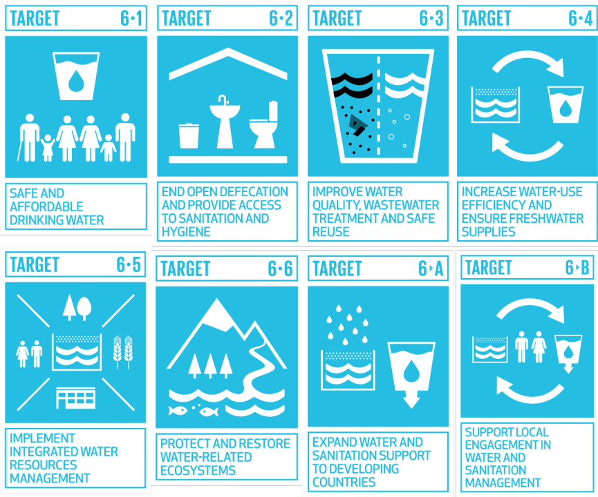

Introduction

Global policies are the backbone of progress on SDG 6 — Clean Water and Sanitation. Governments, international organisations, and civil society have committed to a framework of agreements, targets, and funding mechanisms to ensure that safe water and adequate sanitation become a reality for every person on Earth by 2030.
This page explores the key global policy instruments shaping the water and sanitation agenda: the United Nations 2030 Sustainable Development framework, national implementation strategies, international monitoring systems, and the financial commitments required to turn policy into practice. Understanding these policies is essential for appreciating both the progress made and the distance still to travel.
🌐 UN 2030 Agenda

In September 2015, all 193 UN Member States adopted the 2030 Agenda for Sustainable Development, which enshrines SDG 6 as a standalone goal with eight specific targets. These range from achieving universal safe drinking water (Target 6.1) and ending open defecation (Target 6.2) to protecting water-related ecosystems (Target 6.6) and expanding international cooperation on water management (Target 6.a). The agenda marked the first time water and sanitation were recognised as an integrated global priority rather than sectoral concerns.
🏛️ National Policies

Each country is expected to translate SDG 6 targets into national water and sanitation policies. Many nations have enacted dedicated legislation — such as water acts, national sanitation programmes, and integrated water resource management (IWRM) plans — to create legal frameworks for delivery. Low- and middle-income countries often receive technical support from UN-Water, UNICEF, and the WHO to develop these plans. The quality and ambition of national policies varies significantly, making cross-country comparison and peer learning important tools for accelerating progress.
📊 Global Monitoring

Progress on SDG 6 is tracked through the WHO/UNICEF Joint Monitoring Programme (JMP) for Water Supply, Sanitation and Hygiene. The JMP collects nationally representative household survey data to produce estimates across a service ladder — from "no service" to "safely managed" — for drinking water, sanitation, and hygiene. These reports are presented annually to the UN High-Level Political Forum and inform decisions by donors, governments, and NGOs. Without reliable monitoring, it is impossible to know where investments are needed most urgently.
💰 Financing the Goals

Achieving SDG 6 requires an estimated USD 114 billion per year in investment, according to the World Bank. Financing mechanisms include Official Development Assistance (ODA), national government budgets, blended finance instruments, and private-sector investment. The Addis Ababa Action Agenda (2015) established a global framework for financing sustainable development, calling on developed nations to meet their aid commitments and encouraging innovative domestic resource mobilisation. Closing the financing gap is one of the most critical policy challenges standing between current progress and the 2030 targets.